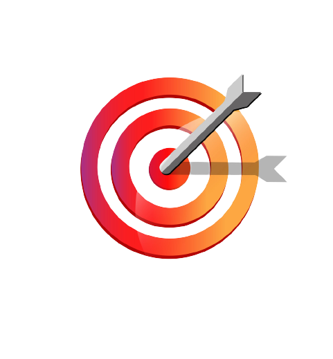

Help Poor Mission in2022

Mission
Heads foundation is a growing foundation to combat poverty expand opportunity for all people in South Africa and Africa at large. Heads

Vission
Heads foundation is a growing foundation to combat poverty expand opportunity for all people in South Africa and Africa at large. Heads foundation focus in Africa issue that

Goals
Heads foundation is a growing foundation to combat poverty expand opportunity for all people in South Africa and Africa at large. Heads foundation focus in Africa issue that